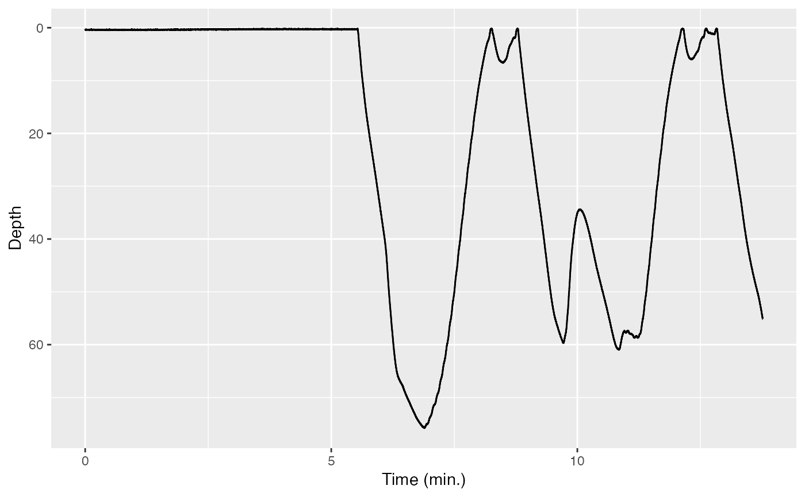

Plots and cropping
tagtools project team
2024-06-27
Source:vignettes/articles/plots-and-cropping.Rmd
plots-and-cropping.RmdWelcome to the plots and cropping vignette! On behalf of the team behind tagtools, thanks for taking some time to get to know our package. We hope it makes your life a little easier.
In this vignette, you will start to create some beautiful plots from the data we’ve been working with, as well as crop these to remove irrelevant data (e.g. before or after a tag was deployed on an animal).
Estimated time for this practical: 25 minutes.
These vignettes assume that you have some basic experience working with R/Rstudio, and can execute provided code, making some user-specific changes along the way. We will provide you with quite a few lines. To boost your own learning, you would do well to try and write them before opening what we give, using this just to check your work.
Additionally, be careful when copy-pasting special characters such as
_underscores_ and ‘quotes’. If you get an error, one thing to check is
that you have just single, simple underscores, and
'straight quotes', whether 'single' or
"double" (rather than “smart quotes”).
Setup: load “cats_test_raw.nc” as a large list, MN
If you’ve already completed load-tag-data within the
same R session, you can skip down a bit to Exploratory data plots. If not, don’t
worry! We’ll catch you up with code below.
For this example, we will make use of a CATS tag data file that is already stored in a .nc file called ‘cats_test_raw.nc’. If you want to run this example, download the “cats_test_raw.nc” file from https://github.com/animaltags/tagtools_data and change the file path to match where you’ve saved the files
Exploratory data plots
The tag toolbox has a function for plotting tag sensor data without getting it out of the structure:

Notice that there are two t’s in this function name:
plott(). plott() is a general purpose tag data
plotter; a few of its key features are:
- For depth data, automatically plots on a reversed y-axis: increasing depths going downwards. This is nicer for visualizing a dive as actually going down, and ascent as actually going up, on your screen.
- “t” stands for “time”; plott also automatically converts the horizontal axis to a convenient time unit like hours or days instead of seconds, or a date-time if the recording start time is given.
- If input
interactiveis set to TRUE (as in the code above), you can zoom in and out of data using keyboard entries.
- The first input to
plott()is the data, which must be in the form of a list (of sensor data lists or of matrices/vectors). Be careful with your data inputs, since, as in the code above, these are often contained within structures. Rather than typing just the variableDepth, it was important that you putMN$depth. - If the list items are named, the names will be used as axis labels.
For more features and info, run the help function ? with
plott:
? plottCropping data from a plot
Not all tags have a way to start logging as soon as the tag has been
deployed on the animal. Often data logging is started by a time trigger
or alarm, and the researcher has to make a guess as to when the tag will
be deployed to set its start time appropriately. Often this means that a
tag is logging data before it is put on an animal. By the same token,
tags have no means of detecting when they release from the tagged
animal. As a consequence, they may continue to log data after they
release. In most cases, the logged data from before and after deployment
has no use. To reduce the data to just the periods when the tag is on
the animal, use the tool crop():
Pc = crop(MN$P)
#> [1] "Position your cursor and then click once followed by clicking FINISH to change the start, or click twice in the same spot followed by clicking FINISH to change the end. If you wish to change both the start and end click once at the start time desired and twice at the end time desired."This displays an interactive depth plot. (It does not know to reverse the y-axis, so that’s why it looks upside down.) Follow the instructions to select the obvious diving section of the data and then click finish. Alternatively, if you click once on your desired left limit and twice on your desired right limit, finish will click itself and the cropping will be complete. The function returns a new data structure which contains just the selected part of the dive profile.
Once you’ve cropped the depth data to the relevant segment, this will
be stored as Pc. Now, use plott to plot Pc to make sure you
cropped it correctly.
(Now would be an especially good time to try and write the code
yourself, since you’ve used plott once before. Hint:
remember that the input to X should be a list.)

If all has gone well, your plott should be absolutely beautiful.
As an alternative to crop, if you already know the start
and end times (with appropriate units) that you would like to crop the
data to, you can use crop_to. For instance, to get back
something like what you just did with crop from the same
depth data:
The resulting sensor data list also contains fields that document what you just did. They should look like:
Pc$history#> [1] "read_cats,crop_to"The history keeps track of the operations that you perform on a data
structure. This helps with traceability if you make the processed data
available in an archive. The crop and start_time fields show how the
original data was changed: the start_time is with respect
to the field dephist_device_datetime_start in the info
structure which says when the tag recording started.
Review
You’ve learned how to make plots using the tagtools
function plott, as well as how to crop these plots.
Congratulations! You’ve completed this vignette.
If you’d like to continue working through these vignettes,
data-quality-error-correction is probably a good option. In
it, you’ll start to use some unique data processing tools that
tagtools provides.
vignette('data-quality-error-correction', package = 'tagtools')Or, you might consider tag-to-whale-frame. This
vignette deals with one specific problem in error correction: orienting
the data in the animal’s frame of reference (when, for various reasons,
it may have been oriented in a different frame of reference).
vignette('tag-to-whale-frame', package = 'tagtools')Animaltags tag tools online: http://animaltags.org/, https://github.com/animaltags/tagtools_r (for latest beta source code), https://animaltags.github.io/tagtools_r/index.html (vignettes overview)